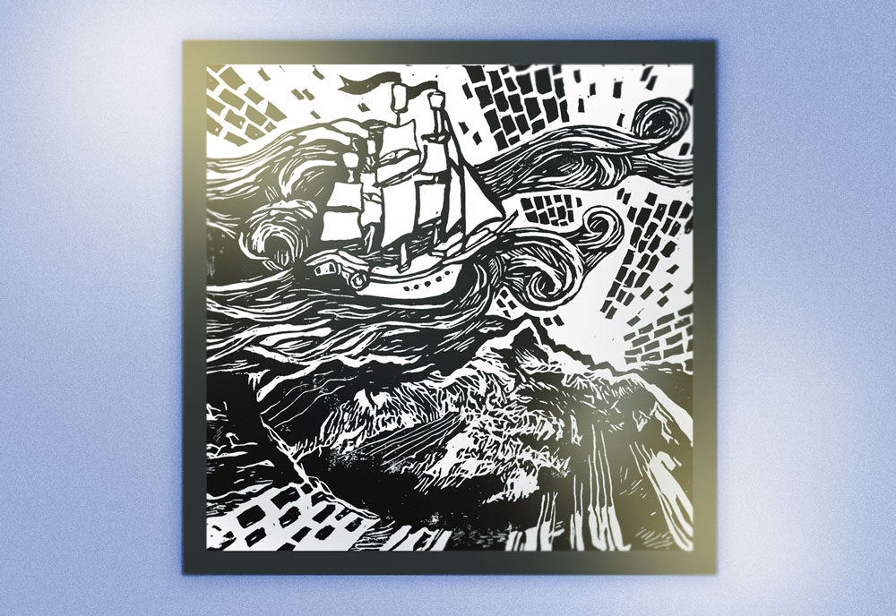
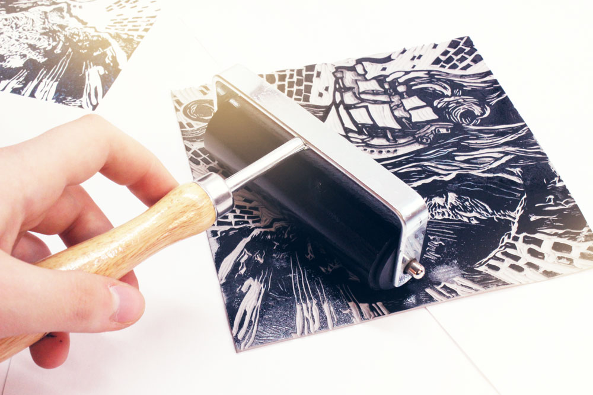
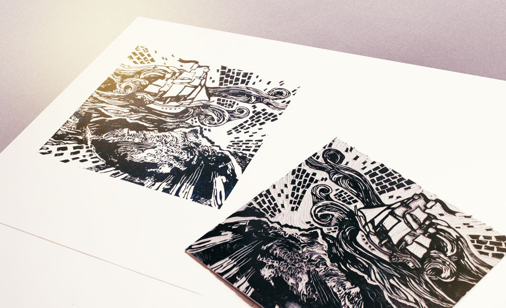
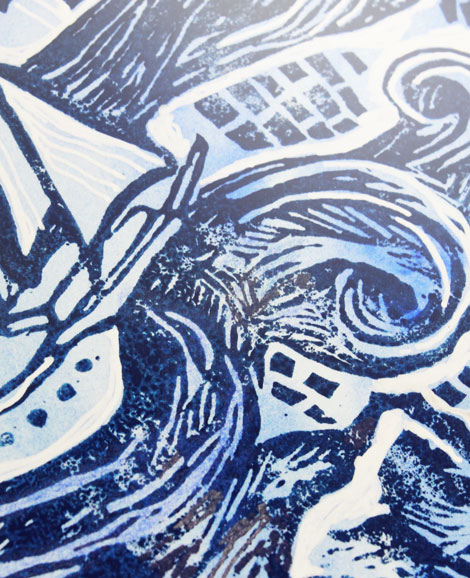
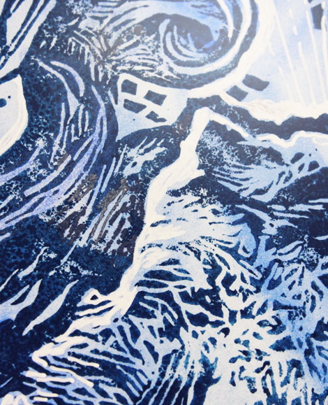
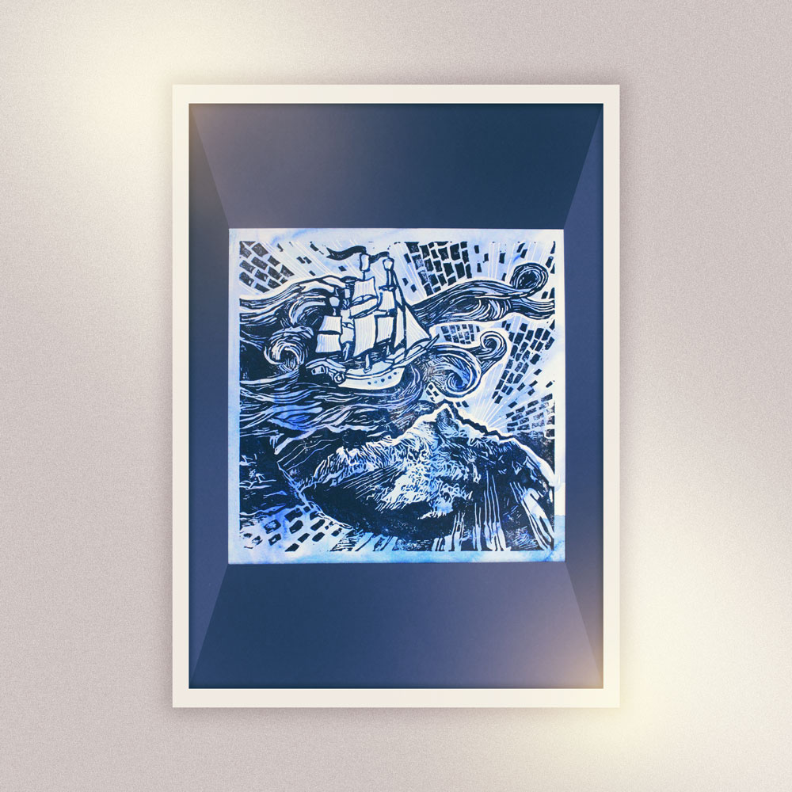

Линогравюра была сделана к творческому вечеру, тема которого была "Маяк".
Линогравюра, напечатанная на бумаге, которая была тонирована акварелью

Линогравюра, напечатанная на белой бумаге

Нанесение краски на печатную форму

Напечатанная линогравюра (слева) и печатная форма из менолеума (справа)


Детали
